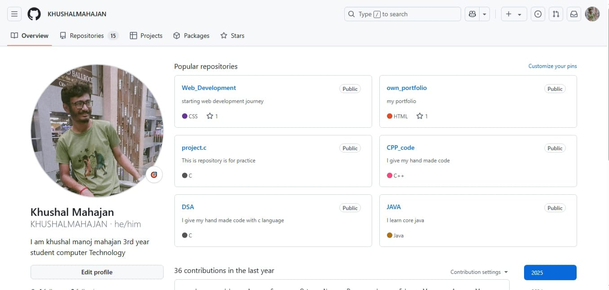
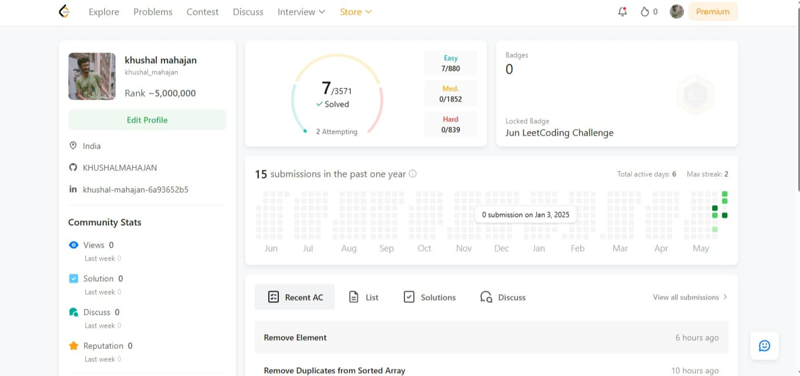
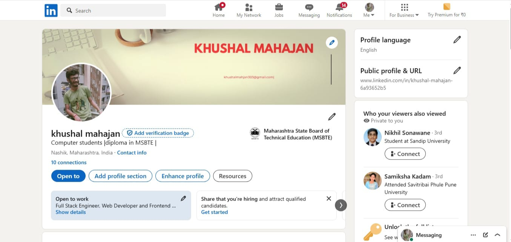

I have completed a Diploma in Computer Technology under MSBTE (Maharashtra State Board of Technical Education).
During my studies, I learned programming languages such as C, Object-Oriented Programming with C++, and Core
Java.
After that, I entered the field of web development, starting with HTML and CSS. I created some basic projects to
strengthen my understanding. Then, I learned the fundamentals of JavaScript, followed by PHP, and developed
additional projects using those technologies.
Later, I explored Python and continued to improve my JavaScript skills. With this knowledge and experience, I
eventually created this portfolio to showcase my work and progress.

GitHub is a web-based platform used for version control and collaboration, primarily for coding
projects. It
allows developers to store, track, and manage changes to their code using Git, a distributed version
control
system. With GitHub, multiple people can work on the same project simultaneously, propose changes, and
review each other's work through features like pull requests and issues. It also hosts repositories
publicly
or privately, making it a powerful tool for both open-source contributions and private development
projects.
LeetCode is an online platform that offers a vast collection of coding problems designed to help users
improve their programming and problem-solving skills. It is widely used by software engineers and
students
to prepare for technical interviews, as it covers a range of topics including data structures,
algorithms,
databases, and system design. LeetCode supports multiple programming languages and provides features
like
contests, discussion forums, and company-specific interview questions, making it a valuable resource for
both learning and career preparation.


LinkedIn is a professional networking platform that allows users to create online resumes, connect with
colleagues, and build a network of professionals across various industries. It is widely used for job
searching, recruiting, and sharing industry-related content. LinkedIn enables users to showcase their
skills, achievements, and work experience, while also offering tools for learning, career development, and
staying informed about job opportunities and trends in the professional world.